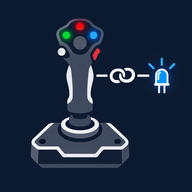

PRO Cockpit Leds Link
Cockpit Leds Link (CLL) pilote les LED de vos périphériques Virpil et les voyants et afficheurs
de vos panneaux Saitek Pro Flight selon l'avion que vous pilotez dans DCS World et selon ce qui se passe à bord. Dans un vrai cockpit, les voyants s'allument selon
l'état de l'appareil : vos joysticks et panneaux font désormais de même, pour une immersion bien plus
grande. Un outil tout-en-un, livré avec VisualPosiScreen PRO dans le même dossier
(CockpitLedsLink.exe).
DCS World ──► DCS-BIOS ──► Cockpit Leds Link ──► LED Virpil
└──► voyants et afficheurs Saitek
Panneaux Saitek ──► Cockpit Leds Link ──► vJoy ──► DCS World (boutons de joystick)
- Des réglages par avion, sans tout refaire : un réglage Par défaut, affiné par catégorie (réaction, hélice, hélicoptère), puis par avion. Le niveau le plus précis l'emporte.
- Des exceptions qui suivent le cockpit : sauf si le Master Caution est allumé → rouge clignotant, sauf si le train est sorti → vert.
- 64 couleurs par LED, fixes ou clignotantes, ou le réglage de VPC Configurator.
- Suivi automatique pendant le vol, lancé avec votre profil VisualPosiScreen PRO.
- LED éteintes à l'arrêt du PC, au lieu de rester allumées toute la nuit.
- Panneaux Saitek (Radio, Multi, Switch) : vus comme un joystick dans DCS, voyants et afficheurs qui suivent l'avion. Voir plus bas.
Jusqu'à VisualPosiScreen PRO 3.22, l'outil s'appelait VirpilLeds
(VirpilLeds.exe, dossier %LOCALAPPDATA%\VirpilLeds). Le fonctionnement décrit
ici est le même ; vos réglages sont repris lors de la mise à jour.
Windows 10 ou 11 (64 bits), DCS World, des périphériques Virpil avec LED et/ou des panneaux Saitek Pro Flight, et VisualPosiScreen PRO.
Pour que DCS voie les panneaux Saitek comme un joystick : vJoy, installé par vos soins (Cockpit Leds Link ne l'installe jamais). Les voyants et afficheurs Saitek, eux, n'ont pas besoin de vJoy.
DCS-BIOS installé dans DCS (dossier Scripts\DCS-BIOS de vos Parties
enregistrées) : c'est lui qui indique l'avion et l'état du cockpit. Prenez une version récente pour
les modules récents (le C-130J demande DCS-BIOS 0.11.7 ou plus).
Cockpit Leds Link ne modifie ni le firmware ni vos profils VPC Configurator. Une LED sans règle garde le réglage de VPC Configurator, et tout revient à ce réglage quand DCS est fermé.
La fenêtre Cockpit Leds Link
Ouvrez CockpitLedsLink.exe dans le dossier de VisualPosiScreen PRO, ou double-cliquez sur son
icône dans la zone de notification quand le suivi DCS tourne. La fenêtre a trois parties :
- à gauche : vos périphériques Virpil (avec le nombre de LED placées, ou ce qu'il reste à faire) et vos panneaux Saitek branchés, puis Quand : les situations pour lesquelles vous réglez les LED ;
- au centre : l'image du périphérique (un schéma pour les panneaux Saitek), avec une pastille par LED ou voyant ;
- à droite : le réglage de la LED choisie (et, pour un panneau Saitek, les formules de ses afficheurs).
Tant que la case Voir sur le matériel pendant le réglage est cochée, chaque réglage s'affiche aussitôt sur le périphérique. En fermant la fenêtre, les LED essayées reviennent au réglage de VPC Configurator (les voyants Saitek s'éteignent).
Première fois : relever et placer les LED
Les LED ne sont pas les mêmes d'un modèle de Virpil à l'autre, et toutes ne répondent pas. Il faut donc, une fois par périphérique :
- Relever les LED : Avancé…, choisissez le périphérique et une carte, puis Balayer la carte. Chaque LED s'allume en blanc à son tour ; répondez Elle s'allume, Rien ou Autre chose. Seules les LED qui s'allument seront proposées ensuite.
- Placer les LED sur l'image : dans la fenêtre principale, Placer les LED…. Chaque LED relevée s'allume ; cliquez sur l'image à l'endroit où vous la voyez. Pour une zone éclairée (marquages d'un manche, couronne), tracez un rectangle. Donnez-lui un nom (RST, Train…) : c'est ce nom qui apparaît ensuite.
Si vous avez déjà mis une image pour ce périphérique dans Commandes des joysticks, Cockpit Leds Link la reprend. Sinon, Choisir une autre image… pendant le placement accepte n'importe quelle image (PNG, JPG).
Quand : les situations
- Hors vol : DCS est ouvert, mais vous n'êtes pas dans un avion. Ce réglage est à part : il ne reprend rien des autres.
- Par défaut : tous les avions.
- Avion à réaction, Avion à hélice, Hélicoptère, Non classé : une catégorie reprend le réglage Par défaut, sauf pour les LED que vous y réglez.
- Un avion (AH-64D_BLK_II, F-16C_50…) : reprend sa catégorie, sauf pour les LED que vous y réglez. Ajouter un avion… propose les avions connus de DCS-BIOS avec leur catégorie ; les avions pilotés pendant le suivi s'ajoutent tout seuls. Clic droit sur un avion : Déplacer vers une autre catégorie, ou Retirer de la liste.
Sur l'image, une pastille pleine est réglée à ce niveau, un anneau reprend le niveau du dessus, un anneau en pointillé est laissé à VPC Configurator. Ctrl+clic choisit plusieurs LED à la fois : le réglage s'applique à toutes.
Régler une LED
Normalement : ce que fait la LED dans cette situation.
- Comme « … » : reprend le niveau du dessus (pour Par défaut et Hors vol : pas de règle, réglage de VPC Configurator) ;
- Laisser à VPC : réglage de VPC Configurator, même si le niveau du dessus a une couleur ;
- Couleur : une couleur des LED Virpil, fixe ou clignotante (lent, normal, rapide). En clignotement, la LED alterne entre la couleur 1 et la couleur 2 (éteinte par défaut).
La palette est rangée comme celle de VPC Configurator : noir, blanc, rouge, vert, bleu, jaune, cyan et magenta, en 30 %, 60 % et 100 %. Plus de couleurs ouvre les 42 mélanges que le matériel accepte aussi (orange, rose, violet…), que VPC Configurator ne propose que par son bouton custom : 64 couleurs en tout.
Sauf si : réagir au cockpit
Une exception change la LED quand une condition du cockpit est vraie : si le Master Caution est allumé, la LED clignote en jaune. Ajouter une exception… ouvre une fenêtre avec, à droite, la liste des voyants et commandes de l'avion fournis par DCS-BIOS (recherche par nom) : un clic remplit la condition. Pour un voyant, la valeur est allumé ou éteint ; pour un interrupteur, sa position.
- Les conditions d'une exception sont reliées par et. Pour un ou, ajoutez une deuxième exception.
- Les exceptions sont lues dans l'ordre : la première vraie l'emporte. Si aucune n'est vraie, c'est le réglage Normalement qui s'applique.
- Clic sur une exception : la modifier. Clic droit : l'essayer, la copier, la monter, la descendre ou la supprimer.
- ▶ Essayer : pendant 5 secondes, la LED montre le résultat de l'exception comme si elle était vraie, sur l'image et sur le matériel, sans lancer DCS.
- Copier / Coller : reprend les exceptions d'une LED sur d'autres, même d'un autre périphérique ou d'un autre avion (à la suite des exceptions existantes, ou à leur place). Les contrôles qui n'existent pas pour l'avion de destination sont signalés.
- Au niveau d'une catégorie ou de Par défaut, seules les données communes à tous les avions sont proposées. Les voyants propres à un avion se règlent au niveau de cet avion.
- Si DCS tourne pendant le réglage, la fenêtre montre la valeur actuelle de chaque condition, et une exception vraie est marquée vraie en ce moment.
Suivre DCS pendant le vol
Le suivi DCS fait le travail pendant le vol : il reconnaît l'avion, applique vos réglages et suit les exceptions. Il tourne en arrière-plan, avec une icône dans la zone de notification (état, ouverture de la fenêtre, pause, journal, quitter). Pour le lancer avec DCS, ajoutez-le à votre profil :
- Dans l'éditeur de configuration, onglet Lancements, cliquez sur Catalogue….
- Choisissez Cockpit Leds Link (LED Virpil selon l'avion) : la commande et le paramètre
--runsont remplis.
Un second lancement ne fait rien : le suivi tourne une seule fois. Vous pouvez aussi le lancer depuis la fenêtre (Démarrer le suivi DCS) ou à chaque ouverture de session (Options…). Pendant que la fenêtre Cockpit Leds Link est ouverte, le suivi attend et reprend à sa fermeture. DCS fermé ou hors mission : toutes les LED reviennent au réglage de VPC Configurator.
Options
- Éteindre les LED quand Windows s'arrête, redémarre ou ferme la session : installe un petit service Windows (une confirmation Windows est demandée). Les LED reprennent le réglage de VPC Configurator au démarrage suivant.
- Démarrer le suivi DCS à l'ouverture de session : inutile si votre profil le lance déjà.
- Panneaux Saitek : envoi vers vJoy (numéro du périphérique, durée d'un cran) et nom du joystick vJoy dans les jeux (voir plus bas).
Lors d'une mise à jour de VisualPosiScreen PRO, Cockpit Leds Link est fermé le temps de remplacer ses fichiers,
puis le suivi est relancé s'il tournait. Journal du suivi :
%LOCALAPPDATA%\CockpitLedsLink\suivi-dcs.txt.
Les panneaux Saitek Pro Flight
Cockpit Leds Link gère le Radio Panel, le Multi Panel et le Switch Panel (branchés en USB, un de chaque). DCS ne les voit pas d'origine : Cockpit Leds Link les lit, les transmet à DCS comme un joystick, et pilote leurs voyants et leurs afficheurs.
Les panneaux vus comme un joystick (vJoy)
- Installez vJoy vous-même. Si Windows refuse son installation, coupez l'intégrité de la mémoire (Sécurité Windows, Isolation du noyau) le temps de l'installer, puis remettez-la : vJoy fonctionne ensuite avec elle.
- Avec l'outil Configure vJoy, donnez au périphérique n° 1 au moins 104 boutons (128 conseillés).
- Le suivi DCS de Cockpit Leds Link envoie alors chaque bouton, interrupteur, sélecteur et molette des panneaux vers vJoy : dans DCS, Options → Commandes, assignez-les comme ceux d'un joystick, pour tous les modules.
| Panneau | Boutons vJoy | À savoir |
|---|---|---|
| Radio Panel | 1 à 32 | Sélecteurs du haut et du bas, ACT/STBY, chaque bague des molettes (un appui par cran). |
| Multi Panel | 33 à 64 | Sélecteur, molette et trim (un appui par cran), boutons AP, volets ; auto-manette ARM (53) et volets au milieu (54) sont fabriqués par l'outil. |
| Switch Panel | 65 à 104 | Interrupteurs en position ON, magnétos, train ; la position OFF de chaque interrupteur est fabriquée par l'outil (85 à 97). |
- Nom du joystick : Options… → Panneaux Saitek → Renommer (par exemple Saitek Panels (CLL) au lieu de vJoy Device). Faites-le avant d'assigner des commandes dans DCS, qui range ses assignations par nom de joystick, puis redémarrez DCS.
- Les mêmes options règlent le numéro du périphérique vJoy et la durée d'un cran de molette (si DCS en manque quand vous tournez vite).
- Remise en phase au début du vol : clic droit sur un avion dans Quand → Remettre les interrupteurs Saitek en phase au début du vol. Cinq secondes après l'arrivée de l'avion, les interrupteurs sont renvoyés à DCS dans leur position réelle : le cockpit prend la position du panneau. Le démarreur des magnétos et le levier de train ne sont jamais renvoyés.
Voyants
Le Multi Panel (voyants AP, HDG, NAV, IAS, ALT, VS, APR, REV) et le Switch Panel (trois voyants de train) se règlent comme des LED Virpil : Normalement, exceptions, clignotement. La palette se limite à ce que le panneau sait afficher : éteint ou allumé pour le Multi (AP en blanc, les autres en jaune) ; éteint, vert, rouge ou jaune pour le train. Exemple : Normalement éteint, sauf si le train avant est sorti et verrouillé → vert, sauf si l'alarme de train est active → rouge.
Afficheurs et formules
Chaque afficheur montre le résultat d'une formule, choisie pour chaque position du sélecteur et réglée par niveau comme les LED (Par défaut, catégorie, avion) :
- Multi Panel : ALT et VS (afficheurs du haut et du bas), IAS, HDG, CRS. Fournies pour
tous les avions : altitude, vitesse verticale (calculée par l'outil,
VS_FT_MIN), vitesse indiquée, cap magnétique. - Radio Panel : pour COM1, COM2, NAV1, NAV2, ADF, DME, XPDR, un afficheur actif et un attente, communs aux sélecteurs du haut et du bas. Réglages de départ fournis (fréquences et canaux) pour l'A-10C et l'A-10C II, le F/A-18C, le F-16C, le F-14, le Ka-50, le Mi-8, le Mi-24P, l'OH-58D et le C-130J.
Une formule utilise les contrôles DCS-BIOS de l'avion. Le bouton … à côté de chaque formule ouvre
leur liste (recherche, type, valeur en direct quand DCS tourne). Un contrôle de type texte seul
(UHF_FREQUENCY) s'affiche tel quel ; sinon, un calcul : + - * /, parenthèses et les
fonctions ifless, ifmore, ifequal, if, min,
max, abs, round, floor, ceiling (même écriture que
DCSFlightpanels : virgule ou point décimal accepté). Vide : afficheur éteint.
Extinction
- DCS fermé, hors mission, pendant que la fenêtre est ouverte ou quand le suivi s'arrête : voyants éteints, afficheurs vides.
- Avec l'option d'extinction à l'arrêt du PC, les panneaux Saitek s'éteignent aussi.
- Sans le suivi : la fenêtre PC… propose d'ajouter à votre profil de session la commande
CockpitLedsLinkOff.exe --saitek, qui les éteint à chaque fin de DCS.
Le Flight Instrument Panel (petit écran couleur) viendra plus tard.
DCS World est une marque d'Eagle Dynamics. DCS-BIOS est un projet libre, indépendant, à installer à part. Virpil et Saitek sont des marques de leurs propriétaires respectifs.